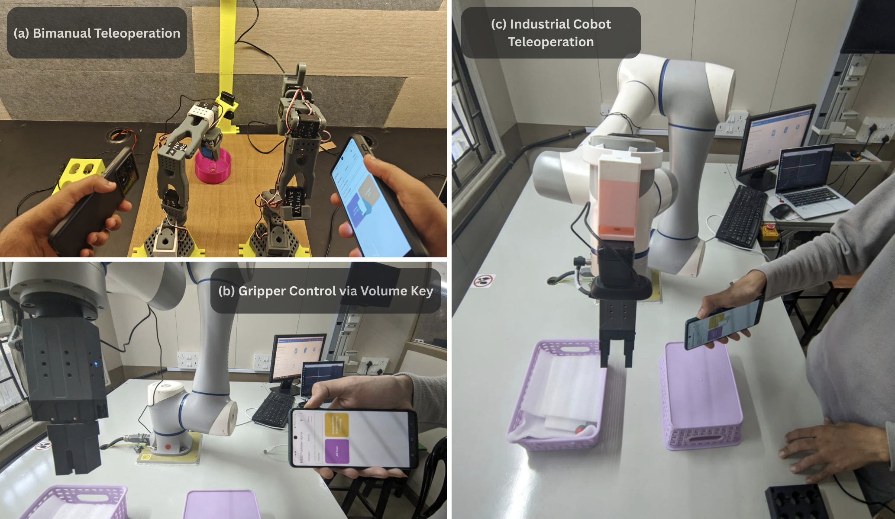
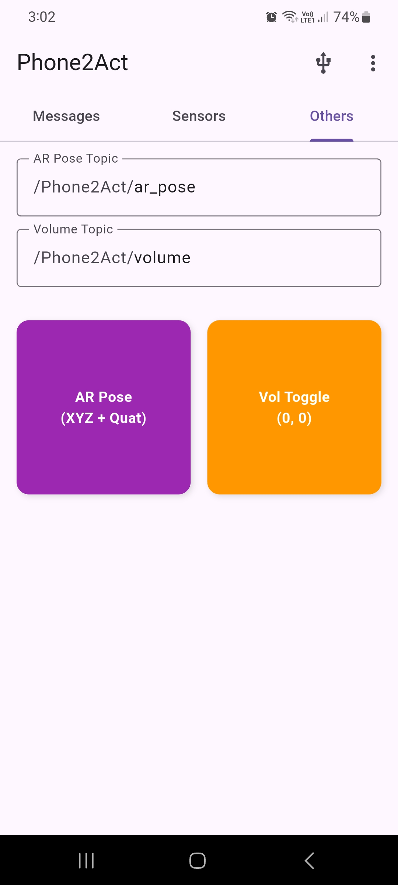
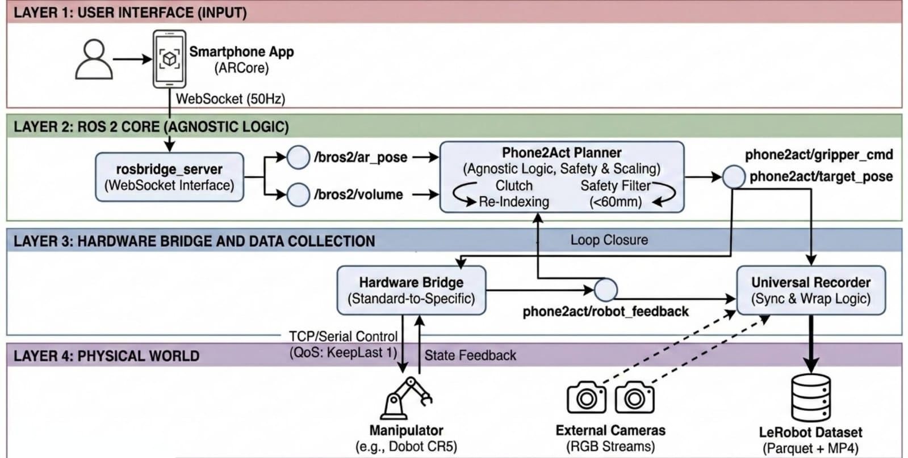

Collecting diverse, high-quality manipulation data for Vision-Language-Action (VLA) model training remains prohibitively expensive for many research groups, as existing teleoperation frameworks rely on specialized hardware or are tightly coupled to specific robot platforms.
We present Phone2Act, a low-cost, hardware-agnostic teleoperation framework that transforms a commodity Android smartphone into a 6-DoF robot controller via Google ARCore. Built on a modular ROS 2 architecture, it decouples control logic from hardware specifics through interchangeable bridge nodes — supporting platforms from industrial cobots to low-cost bimanual arms without any code modification.
A Universal Recorder synchronizes multi-camera RGB streams with robot state feedback and exports demonstrations natively in the LeRobot dataset format, eliminating post-processing and enabling immediate VLA fine-tuning. We validate the framework by fine-tuning GR00T-N1.5 on 130 collected episodes, achieving a 90% success rate on a real-world multi-stage pick-and-place task on a physical Dobot CR5.
Phone2Act enables safe and seamless spatial control by strictly bounding movements and decoupling phone repositioning from robot motion. Key features demonstrated in the video above include:

Phone2Act Android Application UI. (Example showing connectivity and AR pose/volume topics.)
By routing commands through standardized ROS 2 topics, Phone2Act scales effortlessly. Scaling from an industrial Dobot CR5 to a low-cost, 3D-printed LeRobot SO-101 dual-arm setup requires zero modifications to the core source code.
LeRobot SO-101 (Bimanual)
Industrial Cobot (Dobot CR5)
Phone2Act features a Universal Recorder that exports synchronized RGB frames, robot states, and actions directly into the LeRobot dataset format (Parquet + MP4) at 20Hz.
We validated the collected data by fine-tuning the GR00T-N1.5-3B model on 130 teleoperation episodes. Deployed on a physical Dobot CR5, the policy achieved a 90% success rate on a multi-stage real-world pick-and-place task, proving the system's viability for scalable VLA training.

@misc{mandhane2026phone2act,
title={Phone2Act: A Low-Cost, Hardware-Agnostic Teleoperation System for Scalable VLA Data Collection},
author={Om Mandhane and Bipin Yadav and Sangeetha Prasanna Ram and Gopalakrishnan Narayanan},
year={2026},
eprint={2605.01948},
archivePrefix={arXiv},
primaryClass={cs.RO},
url={https://arxiv.org/abs/2605.01948}
}